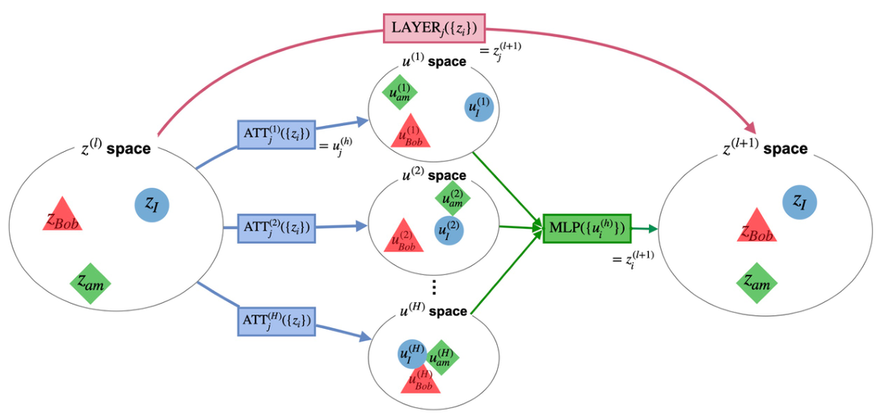

z → u
z2u · Attention
How much each input token z contributes to each attention output u (per head).
Overview
Layer-wise Integrated Gradients (LIG) attributes how tokens influence each other inside a Transformer layer — not only across layers — by applying Integrated Gradients at Attention and MLP module boundaries.
Definitions, baselines, L₂ diagnostics, and PTB experiments are in the paper. This page covers notation, figures, install, and the visualization.
LIG is model-agnostic at the block level — the same API covers
BERT-style encoders (ATT/MLP split), block-only models (layer granularity only),
and GPT-2 decoders, with reproducible PTB experiments in the
release repository.
Boundary detection is automatic: describe_boundaries(model_id) reports
residual-stream nodes z, attention outputs u, and IG hook points.
Notation
Each Transformer layer processes a set of token vectors on the residual stream. zi(l) is the representation of token i at the input of layer l. After multi-head attention (ATT), head h produces ui(l,h) for each token; MLP then updates the stream to z(l+1).
With layer l fixed, one block is z(l) → ATT → u → MLP → z(l+1) (see the flow below). LIG attributes token-to-token influence inside that block using Integrated Gradients at the ATT and MLP module boundaries.
The interactive demo plots within-layer z→z maps (route label z2z): how much each input token contributes to each output token after the full layer block. Labels z2u and u2z refer to the ATT and MLP steps in between when you switch to the composed route in the demo.
How much each input token z contributes to each attention output u (per head).
How much each attention output u (per head) contributes to the next-layer token vector.
Token-to-token contribution for the whole layer block — measured directly (top path) or as the product of z2u and u2z (bottom path).
LIG can attribute within-layer flow in two ways. They answer the same question — how tokens influence each other inside one layer — but follow different paths through the block.

Visualization
Samples 00016 / 00410. Use Display options
(top-right) to toggle paths and adjust circle sizes.
Click the preview below
or use Open in new tab if you prefer a separate window.
Data
The paper's Experiment A evaluates within-layer flow consistency on
Penn Treebank development sentences in Stanford Dependencies format (indices
0–1699).
This site ships only two excerpt sentences for the interactive demo
(00016 and 00410).
References
Key citations from the LIG paper — methods, models, baselines, and evaluation data. Full bibliography: arXiv preprint.
Sundararajan, Mukund; Taly, Ankur; Yan, Qiqi (2017). Axiomatic Attribution for Deep Networks. Proceedings of ICML.
sundararajan2017)@article{sundararajan2017,
title = {Axiomatic Attribution for Deep Networks},
author = {Sundararajan, Mukund and Taly, Ankur and Yan, Qiqi},
journal = {Proceedings of the 34th International Conference on Machine Learning},
year = {2017},
pages = {3319--3328}
}Bach, Sebastian; Binder, Alexander; Montavon, Grégoire; et al. (2015). On Pixel-Wise Explanations for Non-Linear Classifier Decisions by Layer-Wise Relevance Propagation. PLOS ONE.
bach2015)@article{bach2015,
title = {On Pixel-Wise Explanations for Non-Linear Classifier Decisions by Layer-Wise Relevance Propagation},
author = {Bach, Sebastian and Binder, Alexander and Montavon, Gr{\'e}goire and Klauschen, Frederick and M{\"u}ller, Klaus-Robert and Samek, Wojciech},
journal = {PLOS ONE},
year = {2015},
volume = {10},
number = {7},
pages = {e0130140}
}Montavon, Grégoire; Lapuschkin, Sebastian; Binder, Alexander; et al. (2019). Layer-Wise Relevance Propagation: An Overview. Springer (Explainable AI).
montavon2019)@article{montavon2019,
title = {Layer-Wise Relevance Propagation: An Overview},
author = {Montavon, Gr{\'e}goire and Lapuschkin, Sebastian and Binder, Alexander and Samek, Wojciech and M{\"u}ller, Klaus-Robert},
journal = {Explainable {AI}: Interpreting, Explaining and Visualizing Deep Learning},
year = {2019},
pages = {193--209},
publisher = {Springer}
}Vaswani, Ashish; Shazeer, Noam; Parmar, Niki; et al. (2017). Attention Is All You Need. NeurIPS.
vaswani2017)@inproceedings{vaswani2017,
title = {Attention Is All You Need},
author = {Vaswani, Ashish and Shazeer, Noam and Parmar, Niki and Uszkoreit, Jakob and Jones, Llion and Gomez, Aidan N. and Kaiser, {\L}ukasz and Polosukhin, Illia},
booktitle = {Advances in Neural Information Processing Systems (NeurIPS)},
year = {2017},
pages = {5998--6008}
}Devlin, Jacob; Chang, Ming-Wei; Lee, Kenton; Toutanova, Kristina (2019). BERT: Pre-training of Deep Bidirectional Transformers for Language Understanding. NAACL-HLT.
devlin2019)@inproceedings{devlin2019,
title = {{BERT}: Pre-training of Deep Bidirectional Transformers for Language Understanding},
author = {Devlin, Jacob and Chang, Ming-Wei and Lee, Kenton and Toutanova, Kristina},
booktitle = {Proceedings of NAACL-HLT},
year = {2019},
pages = {4171--4186}
}Achtibat, Reduan; Hatefi, Sayed Mohammad Vakilzadeh; Dreyer, Maximilian; et al. (2024). AttnLRP: Attention-Aware Layer-Wise Relevance Propagation for Transformers. ICML.
achtibat2024attnlrp)@inproceedings{achtibat2024attnlrp,
title = {{AttnLRP}: {Attention-Aware} {Layer-Wise} {Relevance} {Propagation} for {Transformers}},
author = {Achtibat, Reduan and Hatefi, Sayed Mohammad Vakilzadeh and Dreyer, Maximilian and Samek, Wojciech and Lapuschkin, Sebastian},
booktitle = {Proceedings of the International Conference on Machine Learning (ICML)},
year = {2024}
}Sturmfels, Pascal; Lundberg, Scott; Lee, Su-In (2020). Visualizing the Impact of Feature Attribution Baselines. Distill.
sturmfels2020)@article{sturmfels2020,
title = {Visualizing the Impact of Feature Attribution Baselines},
author = {Sturmfels, Pascal and Lundberg, Scott and Lee, Su-In},
journal = {Distill},
year = {2020}
}Marcus, Mitchell P.; Santorini, Beatrice; Marcinkiewicz, Mary Ann; Taylor, Ann (1999). Treebank-3. Linguistic Data Consortium, Philadelphia. LDC Catalog No. LDC99T42.
marcus1999treebank)@misc{marcus1999treebank,
author = {Marcus, Mitchell P. and Santorini, Beatrice and Marcinkiewicz, Mary Ann and Taylor, Ann},
title = {Treebank-3},
howpublished = {Web Download},
publisher = {Linguistic Data Consortium},
address = {Philadelphia},
year = {1999},
note = {LDC Catalog No. LDC99T42. https://catalog.ldc.upenn.edu/LDC99T42}
}Resources
Install PyTorch first (CUDA or CPU wheel), then the package.
CLI: lig explain "…"
pip install torch # pick your CUDA/CPU index
pip install layer-wise-integrated-gradientsOne-call attribution to JSON — z→u, u→z, and z→z inside each layer.
from lig import explain
explain(
"The cat sat on the mat.",
model="bert-base-uncased",
num_steps=32,
granularity="all",
layers=[0, 11],
)Reproduce the paper's PTB dev evaluation (indices 0–1699) with the scripts in the repository. Data licensing and the Treebank-3 citation are summarized in the Penn Treebank section.
Inspect residual-stream nodes z, attention outputs u, and hook points without running IG.
from lig import describe_boundaries
describe_boundaries("gpt2", load_weights=False)Cite
Cite the arXiv preprint (2606.21564). Conference paper BibTeX will be added when available.
@article{suzuki2026lig,
title = {LIG: Layer-wise Integrated Gradients for Within-Layer Flow Analysis in Transformers},
author = {Suzuki, Eight and Hino, Hideitsu and Murata, Noboru},
year = {2026},
eprint = {2606.21564},
archivePrefix = {arXiv},
primaryClass = {cs.LG}
}